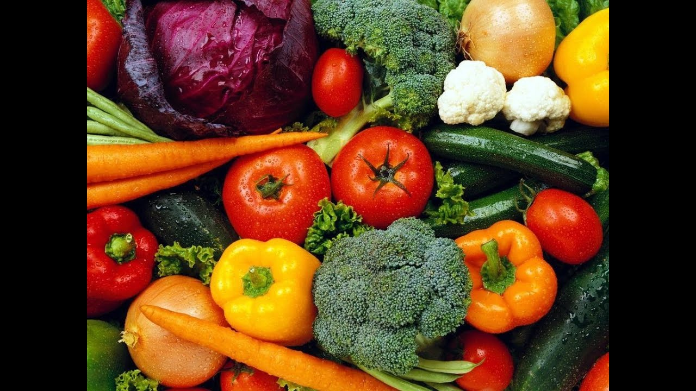

Vegetales | Vegetales24
2020.09.14 13:19
#️⃣QuedateEnCasa 🚚 Los despachos lo s hacemos en 3 Horas .
#️⃣QuedateEnCasa 🚚 Los despachos lo s hacemos en 3 Horas .
Inicio Blog Tienda Ingreso / RegistroLogueo Crear una cuenta
0 items / $ 0.00 Menu 0 items / $ 0.00 Vegetales24 BAG’S Frutas Vegetales Keto Jugos Panadería Al Vacío Hojas y Tallos Artesanal Granos Frutos Secos MascotasSeleccionamos los mejores productos agroalimentarios que cumplen unos requisitos de calidad máximos.
Mostrando 1–30 de 62 resultados
Menu Show 9 24 36 Agotado Unidad Más información CerrarAji Chombo
Vegetales $ 0.90 Agotado Nuevo Libra Más información CerrarAji Dulce o Criollo
Vegetales $ 2.00 Oferta Libra Añadir al carrito CerrarAji Natali
Vegetales $ 1.10 $ 1.02 Oferta Unidad Añadir al carrito CerrarAjo en Tira
Vegetales $ 1.35 $ 1.09 PAQUETE Añadir al carrito CerrarAjo Pelado
Al Vacío , Vegetales $ 1.28 Unidad Añadir al carrito CerrarBastones de Apio
Al Vacío , Vegetales $ 1.95 Libra Añadir al carrito CerrarBastones de Camote o Batata
Al Vacío , Vegetales $ 2.25 Unidad Añadir al carrito CerrarBastones de Zanahoria
Al Vacío , Vegetales $ 1.75 Añadir al carrito CerrarBastones Mixtos Apio/Zanahoria
Al Vacío , Vegetales $ 2.25 Libra Añadir al carrito CerrarBerenjena Gorda
Vegetales $ 1.25 Libra Añadir al carrito CerrarBerenjena Larga
Vegetales $ 1.25 Unidad Añadir al carrito CerrarBolsa maíz Nuevo 3 Unidades
Vegetales $ 1.15 Unidad Añadir al carrito CerrarBolsa Sopera al Vacio
Al Vacío , Vegetales $ 1.86 Libra Añadir al carrito CerrarBrocoli
Hojas y Tallos , Vegetales $ 2.00 Libra Añadir al carrito CerrarCamote o batata
Vegetales $ 1.50 Libra Añadir al carrito CerrarCebolla Blanca
Vegetales $ 1.75 Libra Añadir al carrito CerrarCebolla Morada
Vegetales $ 3.75 Agotado Nuevo Unidad Más información CerrarChampiñones Blancos Enteros 400gr
Vegetales $ 3.95 Agotado Nuevo Unidad Más información CerrarChampiñones Cremini 227gr
Vegetales $ 2.50 Nuevo Unidad Añadir al carrito CerrarChampiñones Cremini 400GR
Vegetales $ 3.95 Agotado Nuevo Unidad Más información CerrarChampiñones Enteros 175gr
Vegetales $ 2.00 Nuevo Unidad Añadir al carrito CerrarChampiñones Enteros 227gr
Vegetales $ 2.50 Nuevo Unidad Añadir al carrito CerrarChampiñones Rebanados 227gr
Vegetales $ 2.50 Unidad Añadir al carrito CerrarChayote al Vacio
Al Vacío , Vegetales $ 1.25 Libra Añadir al carrito CerrarColiflor
Hojas y Tallos , Vegetales $ 3.59 Agotado Libra Más información CerrarColiflor Al vació Congelado
Al Vacío , Vegetales , Vegetales24 $ 4.00 Nuevo Unidad Añadir al carrito CerrarCombo Saludable
Vegetales $ 5.50 Libra Añadir al carrito CerrarCúrcuma
Vegetales $ 2.25 Agotado Nuevo Unidad Más información CerrarHealthy Mix
Vegetales $ 6.95 Libra Añadir al carrito CerrarJengibre
Vegetales $ 1.25 1 2 3 cerrarCategorías
Artesanal Mascotas Granos Panadería Hojas y Tallos Vegetales24 BAG'S Vegetales Frutas Al Vacío Keto Jugos Frutos SecosMarcas
D la Finca D la Finca 46 Healthy Growers Healthy Growers 9Ofertas Activas
Cilantro (Mazo) $ 2.00 $ 1.75 Concentrado de Limón $ 6.99 $ 5.99 Otoe al Vacío $ 1.55 $ 1.35 Cerdo Ahumado en Leña de Nance $ 13.00 $ 10.00 Hoja de Mostaza Bok Choi $ 1.25 $ 1.00 Jugo Naranja Zanahoria $ 2.50 $ 2.00 Jugo Naranja Natural $ 2.00 $ 1.50 Aji Natali $ 1.10 $ 1.02 Ajo en Tira $ 1.35 $ 1.09 Piña $ 2.00 $ 1.50Contacto
Una pasión por la fruta y verdura, un modelo de negocio que encaja perfectamente con la tradición Panameña.
Betania, PTY, PanamaCell: (507) 6998-6070
Cell: (507) 830-6070
Mail: info@vegetales24.com
Post Recientes
10 usos y Beneficios del aceite de Coco para la Salud
23/08/2020 No CommentsLimones confitados
28/06/2020 No CommentsCategorías
Al Vacío 16 Artesanal 37 Frutos Secos 1 Granos 8 Hojas y Tallos 18 Jugos 9 Keto 5 Mascotas 4 Panadería 4 Vegetales24 102 BAG'S 4 Frutas 36 Vegetales 62Links de Interés
Politicas de Entrega y Devoluciones Terms & CondicionesBuscar Productos
Tienda Mi Cuenta Contacto
Carrito
cerrar Menu Categorías Vegetales24 BAG’S Frutas Vegetales Keto Jugos Panadería Al Vacío Hojas y Tallos Artesanal Granos Frutos Secos Mascotas Inicio Blog Tienda Ingreso / Registro Scroll To Top- Importancia de los Vegetales
- 253 mejores imágenes de Laminas de Vegetales y Legumbres ...
- Vegetales | Vegetales24
- 'Chips' vegetales: ¿son más sanas que las patatas fritas ...
- Albóndigas vegetales -Mejor Con Salud-
- Vegetales – Incalfer
- Vallejo Frutas y Vegetales
- Frutas y Vegetales en Inglés - Abingles.com
- VEGGIE PACK Panamá – Delivery de Vegetales y Frutas Frescas
- Nombres de Vegetales en Español [Verduras y Vegetales Verdes]
- Importancia de los Vegetales
Vegetables | Vegetales . Spain's
finest vegetables can now grace your dinner table. Choose from such popular brands as Viter,
Mamia, and more. These vegetables are especially delicious when accompanying your favorite fish,
meat or poultry dish. Hida Roasted Piquillo Peppers With Fried Tomato Net.Wt 340 Gr.
- 253 mejores imágenes de Laminas de Vegetales y Legumbres ...
Los
vegetales en ambos casos son remolacha, boniato y chirivía; y —según dicen los paquetes— no
tienen ni sabores ni colorantes añadidos. Es cierto, al igual que en la anterior, el gusto de
...
- Vegetales | Vegetales24
Los vegetales que hoy consumimos, tanto frutas
como verduras en su enorme diversidad, han sido alguna vez domesticadas por diferentes grupos de
seres humanos: mientras en Europa siempre fue central el trigo, en América se había desarrollado
profundamente el cultivo del maíz.En la actualidad, cada región del planeta posee un detallado
calendario de plantación de vegetales que tiene que ver ...
- 'Chips' vegetales: ¿son más sanas que las patatas fritas ...
Hay
algunos vegetales que simplemente crecen mejor, más rápido y más abundante en macetas! Por esto
hemos decidido juntar los mejores 20 vegetales para cultivar en macetas. Esto no requiere
espacio de jardín, así que incluso si vives en un apartamento, un balcón debería ser más que
suficiente para cultivar cualquiera de estos! Vegetales Para Cultivar En Macetas #1.
- Albóndigas vegetales -Mejor Con Salud-
B Vegetales. Perejil Por 200gr $
1.25. Frutas. Quick View. Frutas, Otros Productos. Jugo de Naranja Por 1/2 Galon $ 5.25. Añadir
a la lista de deseos. Añadir al carrito. Quick View. Frutas. Papaya Por Unidad $ 1.75. Añadir a
la lista de deseos. Añadir al carrito. Quick View. Frutas. Kiwi Por Unidad $ 0.50. Añadir a la
lista de deseos ...
- Vegetales – Incalfer
Aunque el pescado es una buena fuente de ácidos
grasos omega-3, también se pueden encontrar en muchos vegetales como las coles de Bruselas, col
rizada, espinacas y ensalada de verduras de hojas. Alimentos ricos en vitamina E.
- Vallejo Frutas y Vegetales
Frutas y vegetales en el idioma inglés. Como
se escriben y como se dicen en ingles
- Frutas y Vegetales en Inglés - Abingles.com
Frutas y verduras que son
contables Todo lo que sea contable podemos expresarlo como una determinada cantidad: - O nion
(cebolla) - Grape (uva) - Pear (pera) - P each (durazno) - R adish (rábano) - E ggplant
(berenjena) - P epper (pimentón) - P ineapple (Piña) - B anana (cambur) - Orange (naranja)
- VEGGIE PACK Panamá – Delivery de Vegetales y Frutas Frescas
Pronunciación en inglés de vegetables. Aprende a pronunciar vegetables en inglés con videos,
audio y desgloses silábicos de los Estados Unidos y el Reino Unido.
- Nombres de Vegetales en Español [Verduras y Vegetales Verdes]
Las
líneas para procesado de vegetales ofrecen la más moderna tecnología para procesos contínuos,
adaptados a las necesidades de producción y posibilidades económicas de los procesadores de
vegetales. El diseño modular y la gran variedad de equipos disponibles permiten configurar la
línea ideal para cada aplicación.
Vegetables | Vegetales . Spain's finest vegetables can now grace your dinner table. Choose from such popular brands as Viter, Mamia, and more. These vegetables are especially delicious when accompanying your favorite fish, meat or poultry dish. Hida Roasted Piquillo Peppers With Fried Tomato Net.Wt 340 Gr.
Los vegetales en ambos casos son remolacha, boniato y chirivía; y —según dicen los paquetes— no tienen ni sabores ni colorantes añadidos. Es cierto, al igual que en la anterior, el gusto de ...
Los vegetales que hoy consumimos, tanto frutas como verduras en su enorme diversidad, han sido alguna vez domesticadas por diferentes grupos de seres humanos: mientras en Europa siempre fue central el trigo, en América se había desarrollado profundamente el cultivo del maíz.En la actualidad, cada región del planeta posee un detallado calendario de plantación de vegetales que tiene que ver ...
Hay algunos vegetales que simplemente crecen mejor, más rápido y más abundante en macetas! Por esto hemos decidido juntar los mejores 20 vegetales para cultivar en macetas. Esto no requiere espacio de jardín, así que incluso si vives en un apartamento, un balcón debería ser más que suficiente para cultivar cualquiera de estos! Vegetales Para Cultivar En Macetas #1.
B Vegetales. Perejil Por 200gr $ 1.25. Frutas. Quick View. Frutas, Otros Productos. Jugo de Naranja Por 1/2 Galon $ 5.25. Añadir a la lista de deseos. Añadir al carrito. Quick View. Frutas. Papaya Por Unidad $ 1.75. Añadir a la lista de deseos. Añadir al carrito. Quick View. Frutas. Kiwi Por Unidad $ 0.50. Añadir a la lista de deseos ...
Aunque el pescado es una buena fuente de ácidos grasos omega-3, también se pueden encontrar en muchos vegetales como las coles de Bruselas, col rizada, espinacas y ensalada de verduras de hojas. Alimentos ricos en vitamina E.
Frutas y vegetales en el idioma inglés. Como se escriben y como se dicen en ingles
Frutas y verduras que son contables Todo lo que sea contable podemos expresarlo como una determinada cantidad: - O nion (cebolla) - Grape (uva) - Pear (pera) - P each (durazno) - R adish (rábano) - E ggplant (berenjena) - P epper (pimentón) - P ineapple (Piña) - B anana (cambur) - Orange (naranja)
Pronunciación en inglés de vegetables. Aprende a pronunciar vegetables en inglés con videos, audio y desgloses silábicos de los Estados Unidos y el Reino Unido.
Las líneas para procesado de vegetales ofrecen la más moderna tecnología para procesos contínuos, adaptados a las necesidades de producción y posibilidades económicas de los procesadores de vegetales. El diseño modular y la gran variedad de equipos disponibles permiten configurar la línea ideal para cada aplicación.
